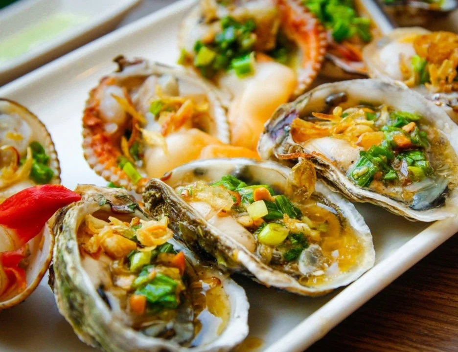
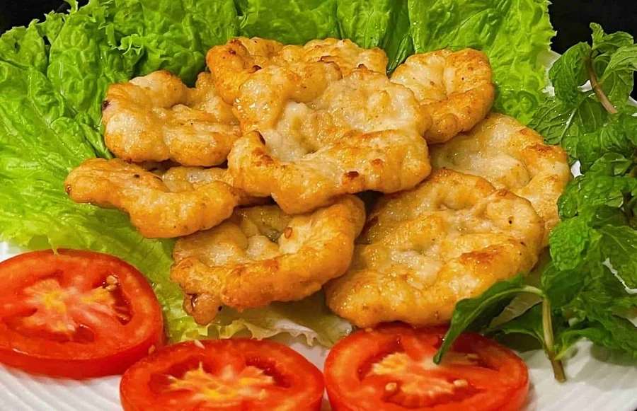
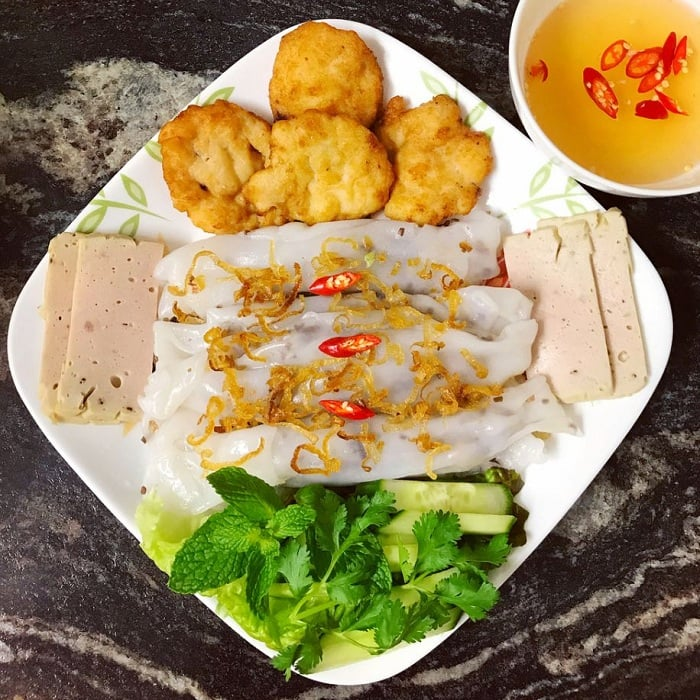
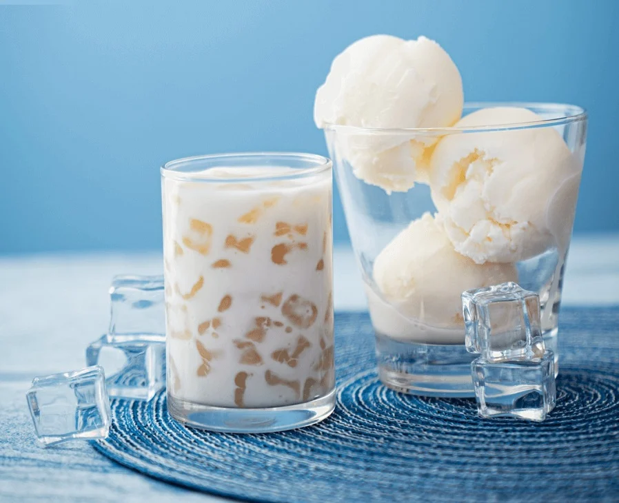

Top 5 local Ha Long foods you need to try at least once
Ha Long Food has a special lure to visitors, which is a combination of fresh seafood and skilful processing techniques. Let’s have a look at our thoughtful list of the distinguished local dishes and a place to stay to enjoy the most of your time in Ha Long, Quang Ninh - Vietnam.
1. Banh Gat Gu (Nodding Cake)
On the top of the list of street food in Ha Long Bay, this is a kind of roll made from rice powder with minced pork and fried onions as fillings. The roll should be dipped in fish sauce and chilly. As the roll is long and soft, it will hang down when the diners hold it in their hands which looks like a person nodding. This funnily named tasty dish can be tried at Ha Long night market inside Ha Long Marine Plaza, Bai Chay, Ha Long city at a fairly reasonable price.
The dish is a top street food in Ha Long Bay (Source: collected)
2. Ngan (Austriella Corrugata)
This kind of shellfish tastes very good and is among the top dishes of Quang Ninh cuisine. The corrugata can be processed in various ways including being steamed, baked, grilled, cooked in soup, stirred in fat with noodle or even put in wine for a long time to create a nutritious alcoholic drink.

Quang Ninh food has the advantage of fresh seafood. (Source: collected)
Many restaurants in Ha Long offer this dish. Or you can try it at Thien Anh Seafood Restaurant, in Cai Dam Urban Area, Bai Chay.
3. Cha Muc (Grilled Chopped Squid) - a must-eat Ha Long food
Grilled Chopped Squid is the first Ha Long food that you should try when setting foot in Ha Long city. The dish is made of chopped or minced squid, formed into a circle and fried. The dish here is more tasty than those in other localities.
The dish can be served with steam sticky rice or normal steam rice, which is mouthwatering to many people who have tried it.

Grilled Chopped Squid with sticky rice (Source: collected)
The dish can be ordered at Quang Phong Restaurant, C112A Block, Old Quarter Area, Ha Long city.
The grilled chopped squid can be served with hot steamed rice rolls as well. Some salted minced pork and wood-ear mushroom are wrapped inside the rolls. The dish is eaten with fish sauce. You can try it at Goc Bang Roll & Grilled Chopped Squid Restaurant, Opera House Lane, Bach Dang ward, Ha Long city.

Grilled Chopped Squid with steamed rice rolls (Source: collected)
4. Steamed rice rolls (Banh cuon)
Banh cuon is a specialty consisting of steamed rice rolls typically filled with pork, mushrooms, and spices. The rice rolls are topped with fried shallots, scallions, and herbs. This is a great option for those looking for something light yet flavorful.
The combination of local herbs and spices gives this dish a unique flavor. Additionally, it is made of lean proteins like pork and mushrooms, which is perfect for those looking for a healthier meal.
Banh cuon is not a new dish but still has a lot of charm (Source: Collected)
5. Halong Tapioca Yogurt - Quang Ninh cuisine’s most famous dessert
Quang Ninh cuisine is highly praised with Ha Long Tapioca Yogurt, which is very special with the fatty taste of coconut milk and tapioca that is similar to marshmallow. The yogurt also contains aloe vera, jelly and dried coconut.
You can try the delicacy at Cai Dam Tapioca Yogurt, 589 Ha Long, Bai Chay, Ha Long city.

Ha Long Tapioca Yogurt is unique (Source: collected)